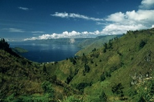

Onze Projecten
De projecten die gesteund worden door WWF-België.
WWF ZET ZICH IN OM DE WILDE NATUUR TE BESCHERMEN.
Bedreigde Dieren
Al meer dan 50 jaar beschermt WWF het dierenrijk. Wilde diersoorten zijn onmisbaar om de natuur in evenwicht te houden.

Prioritaire Gebieden
Door deze natuurschatten te beschermen, behoudt WWF hele ecosystemen en de habitats van verschillende iconische soorten.
Grootste Uitdagingen
WWF wijdt zich al meer dan 50 jaar aan de strijd tegen de grote bedreigingen die wegen op wilde natuur.
Terreinprojecten
Dankzij jouw steun leidt WWF overal ter wereld terreinprojecten om de wilde natuur te beschermen.
ER LEVEN WERELDWIJD NOG AMPER 3890 TIJGERS IN HET WILD!
Elke week worden er in Azië 2 tijgers gedood voor illegale handel in tijgervacht en beenderen.
Maak het verschil.
ADOPTEER EEN DIER
Bescherm een iconische diersoort.
NATUURBEHOUD
Investeer in de wilde natuur.
IN MIJN TESTAMENT
Laat een levende planeet na.